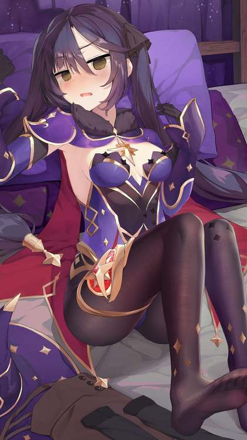
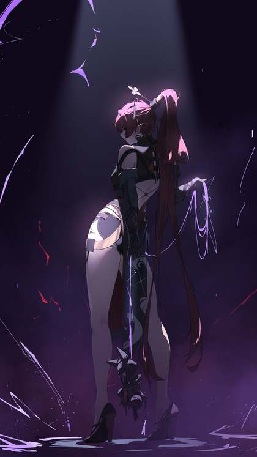
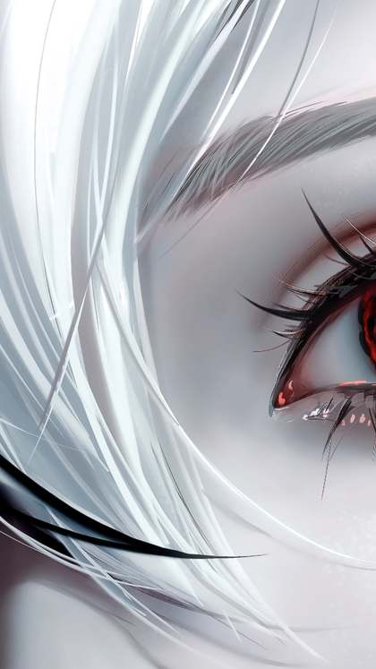
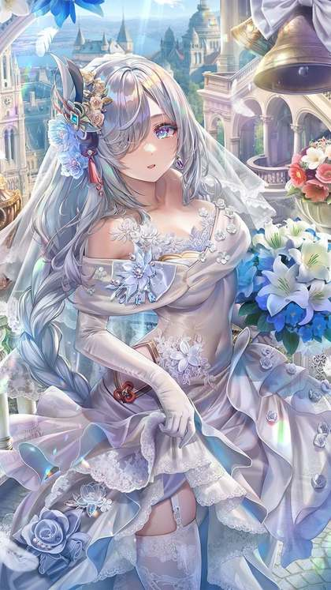

Genshin Impact 7.1 Banners: Vesna, Vodyanitsa and the Skirk Rerun

Last updated: 8 October 2026
Version 7.1 of Genshin Impact, titled "A Rekviem for the Underworld", launched on 23 September 2026 and doubles as the game's sixth anniversary update. It is also the update that opens the Snezhnaya chapter, so the banners on offer are a mix of brand-new faces and long-awaited reruns. Phase 1 is live now and runs until 13 October, while Phase 2 brings a double Cryo rerun a little later in the cycle.
This article walks through both phases, the weapons that come with them, and what the wider 7.1 cycle means if you are deciding where to spend your wishes.

7.1 banner phases at a glance
Version 7.1 runs in two phases. Phase 1 is the anniversary phase, led by two new five-stars. Phase 2 swaps to a pair of Cryo reruns.
| Phase | Dates | Featured 5-stars |
|---|---|---|
| Phase 1 (live now) | From the 7.1 update until 13 October 2026, 17:59 server time | Vesna (Anemo, Sword) and Vodyanitsa (Hydro, Catalyst) |
| Phase 2 (next) | 13 October – 3 November 2026 | Skirk (Cryo) and Escoffier (Cryo) |
There is no maintenance when the two phases swap. Phase 1 simply closes at 17:59 server time on 13 October and Phase 2 opens straight after, so the transition happens without any downtime.
Phase 1: Vesna and Vodyanitsa
Phase 1 introduces two brand-new five-star characters, each with a dedicated event banner. Both banners run from the 7.1 update until 13 October 2026 at 17:59 server time.
Vesna — Anemo, Sword
Vesna is the new Anemo five-star, wielding a Sword, and headlines the "When Warm Winds Cavort" banner. As a fresh Anemo addition, she is the character many players have been saving for since the Snezhnaya chapter was first teased.
Vodyanitsa — Hydro, Catalyst
Vodyanitsa is the new Hydro five-star, using a Catalyst, and appears on the "Surging Ballad" banner. The two new five-stars running side by side means Phase 1 asks players to choose where to focus their wishes.
The featured 4-stars
Both character banners share the same boosted four-star line-up during Phase 1:
- Diona
- Faruzan
- Chongyun
These three appear at boosted rates on both the Vesna and Vodyanitsa banners, which makes Phase 1 a reasonable window if you still need any of them.
The Phase 1 weapon banner
The Phase 1 "Epitome Invocation" weapon banner features two five-star weapons, one for each new character:
- Beyond the Chrysalis — Sword, Vesna's signature weapon
- Hymn of the Maelstrom — Catalyst, Vodyanitsa's signature weapon
The featured four-star weapons on this banner include New Bough, Winter's Heavy Heart, Breezeborne Refrain, Favonius Greatsword and Dragon's Bane.

Phase 2: the Skirk and Escoffier reruns
Phase 2, running from 13 October to 3 November 2026, is a double rerun of two Cryo characters, Skirk and Escoffier. Each gets a dedicated event banner.
Skirk — Cryo
Skirk returns on the "Void Star's Advent" banner.
Escoffier — Cryo
Escoffier returns on the "La Chanson Cerise" banner.
Because both are Cryo, Phase 2 will be the more attractive window for anyone who skipped them the first time or who is building around Cryo teams.
The featured 4-stars
The Phase 2 character banners share the following boosted four-star line-up:
- Dahlia (Hydro)
- Candace (Hydro)
- Mika (Cryo)
The Phase 2 weapon banner
The Phase 2 "Epitome Invocation" weapon banner features two five-star weapons:
- Azurelight — Sword
- Symphonist of Scents — Polearm
The featured four-star weapons on this banner are Sturdy Bone, Sacrificial Greatsword, Favonius Lance, The Widsith and Sacrificial Bow.
Should you pull or save?
Phase 1 and Phase 2 pull in different directions, so it helps to think about how the pity system works before you spend.
Character event banners share pity progress and the featured-character guarantee. That means progress you build on one character banner carries over to the next one, and a five-star is guaranteed within 90 wishes. If you are partway to a guarantee, that progress is not lost when Phase 1 gives way to Phase 2.
The weapon banner works differently. "Epitome Invocation" uses a separate weapon pity counter and the Epitomized Path system, so weapon wishes do not share progress with character wishes. Keep the two counters separate when you plan.
A simple way to frame the choice:
- If you specifically want Vesna or Vodyanitsa, Phase 1 is the only window for them in this version, so those wishes need to happen before 13 October.
- If you are building toward Cryo or already wanted Skirk or Escoffier, waiting for Phase 2 lets you keep your character pity intact and aim at the reruns.
- If you are undecided, remember that any progress you make now carries forward, so a small amount of wishing on Phase 1 does not lock you out of Phase 2.
It is also worth weighing the anniversary rewards. Version 7.1 hands out 1,600 Primogems and 10 Intertwined Fates, worth 20 wishes in total, along with a free Standard five-star and a free limited five-star after clearing the 7.1 Archon Quest. Those extras soften the cost of wishing during the anniversary phase.

Other dates to keep in mind
Beyond the banners, the 7.1 cycle has a few other dates worth noting:
- Imaginarium Theater Season 1 opened on 1 October.
- A new Spiral Abyss season starts on 16 October.
- The "Resplendent Starlight" daily login run gives 10 Intertwined Fates across seven login days and ends 19 October.
- Version 7.1 ends on 3 November 2026, with 7.2 maintenance projected for 4 November 2026.

What's coming in 7.2 (leaks)
Version 7.2 is not confirmed. What we have so far is leak-level information, so treat it as rumour rather than a schedule.
Leaks point to Mitya, a new five-star Electro character, and Valeriy, a new four-star Electro character, both expected in Phase 1 of 7.2. That phase is expected to begin from about 3 November 2026, just after 7.1 closes. None of this is official, and banner line-ups can change before a version goes live.
Frequently asked questions
When does Phase 1 of Genshin Impact 7.1 end?
Phase 1 ends on 13 October 2026 at 17:59 server time. Both the Vesna and Vodyanitsa character banners, and the Phase 1 weapon banner, close at that point.
Is there maintenance when Phase 2 starts?
No. There is no maintenance when the phases swap on 13 October. Phase 1 closes at 17:59 server time and Phase 2 opens straight after.
Who is on the Phase 2 banners?
Phase 2 is a double Cryo rerun running from 13 October to 3 November 2026. Skirk returns on the "Void Star's Advent" banner and Escoffier returns on the "La Chanson Cerise" banner.
Is 7.2 confirmed?
No. Version 7.2 is not confirmed. Leaks point to Mitya (a new five-star Electro) and Valeriy (a new four-star Electro) in Phase 1, expected from about 3 November 2026, but this should be treated as a leak only until it is officially announced.